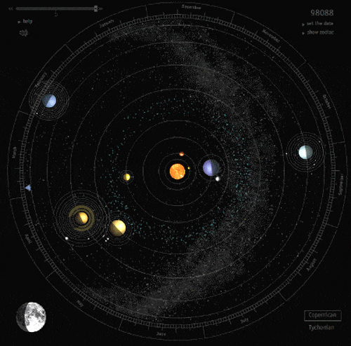
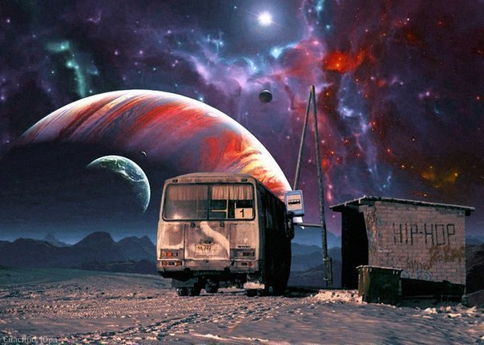
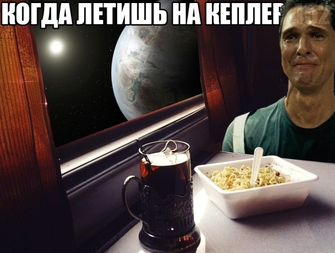
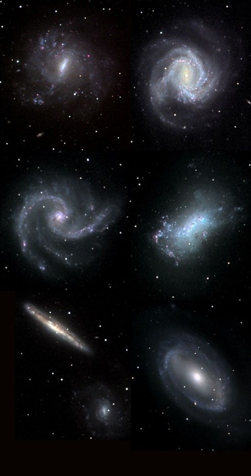
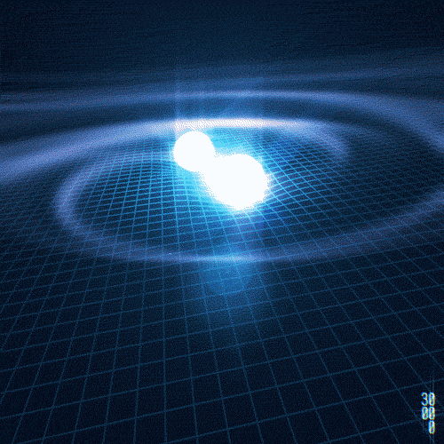
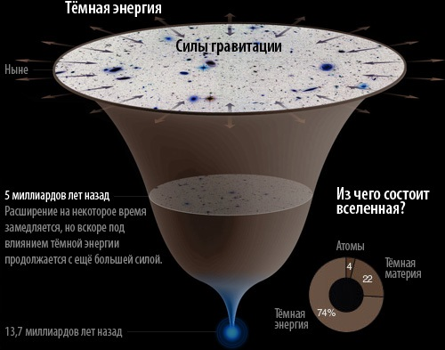

Освоение космического пространства!
Мы рады приветствовать вас на нашем сайте посвященному Проблемам Межзвёздных Полётов.
Далее мы поведуем вам о наших возможностях, проблемах и пользе освоения космического пространства.
Вас ждет захватывающее путеществие!!!
Ну что, поехали?!

Для начала мы разберем, что такое Межзвёздное пространство и Межзвёздный полет.
Космическое пространство, космос (др.-греч. κоσμος «мир», «Вселенная») — относительно пустые участки Вселенной, которые лежат вне границ атмосфер небесных тел. Вопреки распространённым представлениям, космос не является абсолютно пустым пространством: в нём есть, хотя и с очень низкой плотностью, межзвёздное вещество (преимущественно молекулы водорода), космические лучи и электромагнитное излучение, а также гипотетическая тёмная материя.
Межзвёздный полёт — путешествие между звёздами космических пилотируемых кораблей или автоматических станций, которые, таким образом, могут именоваться звездолётами. Выделяют два определения межзвездных полетов: медленные путешествия в десятки тысяч лет (например, автоматические станции «Пионер 10», «11» и два «Вояджера» или предложенные некоторыми учеными проекты человеческих поселений на межзвездных кометах) без специальных двигателей или быстрые путешествия (например, полет к ближайшим звездам за срок меньший человеческой жизни) со специальными двигателями или движителями (космические парусники, термоядерные двигатели и пр.). Расстояние до ближайшей звезды (Проксимы Центавра) составляет около 4,243 световых лет, то есть примерно в 268 тысяч раз больше расстояния от Земли до Солнца. Четыре автоматические межпланетные станции — Пионер-10, Пионер-11, Вояджер-1, Вояджер-2 — достигли третьей космической скорости и покинули Солнечную систему; теперь с их помощью изучают межзвёздное пространство. Аппаратов, прямым назначением которых был бы полёт до ближайших звёзд, на начало XXI века не создано. Во второй половине XX века существовали проекты разработки пилотируемых межзвёздных кораблей «Орион» и «Дедал» на ядерной тяге. Их продолжением стали современные проекты ядерных звездолётов Longshot и «Икар».
Основные проблемы
- Опасности
- Скорость света
- Наши скорости(расчет времени полета к Проксиме - ближайшей звезде)
- Питание
- Анабиоз
- Жизнеобеспечение - кислород (голодание)(туманность текста)
Опасности
К сожалению наши технологии сейчас не могут себе позволить путешествовать в межзвездном пространстве. Для пилотируемых межзвездных экспедиций потребуется поддерживать жизнеобеспечение и здоровье астронавтов на протяжении длительного периода времени, поэтому нужен замкнутый цикл жизнеобеспечения с многократным восстановлением и использованием питательных веществ. Эта система должна будет снабжать астронавтов пищей, воздухом и водой. Для сохранения прочности костей потребуется искусственная гравитация, для защиты от космического излучения — радиационная защита, а от попадания метеоритов — метеоритная защита. Длительное путешествие в один конец в замкнутом пространстве может породить психологические проблемы. Во время межзвездного путешествия большую опасность для космонавтов будет представлять космическое излучение, поэтому потребуются меры защиты от нее. Опасностью для межзвездного корабля будут частицы и вещество межзвездной среды, которые при быстрой полете звездолета обладают большей проникающей и разрушительной силой. Еще одной проблемой будет большой уровень выделения тепла от мощных источников энергии, что потребует эффективных радиаторов или уменьшения тепловыделения. Столкновение с межзвёздной пылью будет происходить на околосветовых скоростях и по физическому воздействию напоминать микровзрывы. При скоростях больше 0,1 С защитный экран должен иметь толщину десятки метров и массу сотни тысяч тонн. Но этот экран будет надёжно защищать только от межзвёздной пыли. Столкновение с метеоритом будет иметь фатальные последствия, сравнимые со взрывом водородной бомбы.
Скорость света
Скорость света в вакууме — абсолютная величина скорости распространения электромагнитных волн в вакууме.В физике традиционно обозначается латинской буквой «c» (произносится как «цэ»). Скорость света в вакууме — фундаментальная постоянная, не зависящая от выбора инерциальной системы отсчёта (ИСО). Она относится к фундаментальным физическим постоянным, которые характеризуют не просто отдельные тела или поля, а свойства геометрии пространства-времени в целом.Из постулата причинности (любое событие может оказывать влияние только на события, происходящие позже него и не может оказывать влияние на события, произошедшие раньше него) и постулата специальной теории относительности о независимости скорости света в вакууме от выбора инерциальной системы отсчета (cкорость света в вакууме одинакова во всех системах координат, движущихся прямолинейно и равномерно друг относительно друга) следует, что скорость любого сигнала и элементарной частицы не может превышать скорость света. Таким образом, скорость света в вакууме — предельная скорость движения частиц и распространения взаимодействий.
Расчеты времени полёта
На примере полета к Проксима Центавре - ближайшей звезде
Если бы «Вояджер-1» двигался в направлении красного карлика Проксимы Центавра с постоянной скорость в 60 000 км/ч, ему потребовалось бы 76 000 лет (или более 2500 поколений), чтобы преодолеть это расстояние. Но если бы зонд развил рекордную постоянную скорость в 240 000 км/ч — ему потребовалось бы 19 000 лет (или более 600 поколений), чтобы преодолеть 4,243 светового года. Существенно лучше, хотя и близко не практично.
Питание
Одна из самых важных проблем Межзвездного полета состоит в простейшем питании команды корабля. Процессы получения продуктов питания в замкнутом пространстве без каких либо источников невозможен, без определенных запасов и оборудрования для их готовки. К тому же, если полет будет долог, то могут назреть различные психологические проблемы экипажа, на фоне нехватки питания, сна, досуга и иных социальных потребностей человека. Нахождение в замкнутом пространстве порождает ряд проблем, с которыми отчасти может справиться Анабиоз. Но и он не способен решить проблемы питания, т.к. даже по прибытию на место дислокации - продукты питания нашим героям будет неоткуда брать. Здесь и назревает еще одна фундаментальная проблема, без которой человек не сможет существовать. Везти огромные количества грузов первой необходимости значительно увеличивают массу самого корабля, тем самым снижая его скорость и пропорционально увеличивая время полета. Как видите, данная проблема сама себя кусает за хвост, словно Уроборос.
Так же стоит понимать, что питание это получение всех необходимых питательных элементов, и никаких развлекательных, увеселительных и расслабляющих "блюдах" речи быть не может!!!

Мы затронули такой термин как Анабиоз. Разберемся, что это такое!!!
Анабиоз
Анабиоз - это временное замедление или прекращение жизненных процессов в организме под воздействием внешних или внутренних факторов. При этом дыхание, сердцебиение и другие жизненные процессы замедленны настолько, что могут быть обнаружены только с помощью специальной аппаратуры. Проще говоря - это способность организмов переживать неблагоприятное время (изменение температуры окружающей среды, отсутствие влаги и др.) в состоянии, при котором резко снижается обмен веществ и отсутствуют видимые проявления жизни. При наступлении благоприятных условий организм оживает. Погружение космонавтов в анабиоз было предложено как один из способов для длительного межзвёздного или межгалактического путешествия человечества. В таком случае отпадает необходимость в корабле поколений. Нужны лишь вахтёры, контролирующие наибольшую часть замороженного населения корабля. Это позволит значительно экономить ресурсы, необходимые для поддержания жизнедеятельности экипажа, пассажиров и энергозатрат корабля.
Анабиоз может решить некоторые проблемы, которые напрямую связаны с бытом и досугом, медициной и жизнеобеспечением (о нем мы поговорим далее), затратами энергии и питания.
Но ведь одними дошираками на протяжении сотен лет сыт не будешь!!!
Жизнеобеспечение (кислородное голодание)
Система жизнеобеспечения в пилотируемых полётах космических аппаратов — группа устройств, которые позволяют человеку выживать в космосе и поддерживать жизнь экипажу корабля. В необычных условиях космического полета (вакуум, лучистый теплообмен, ионизирующие излучения) человек должен находиться в замкнутом герметичном отсеке космического летательного аппарата. В обитаемом отсеке необходимо создавать условия для обеспечения нормального существования и работы человека. Эти условия необходимо поддерживать в течение всего полета, подавая в отсек вещества, потребляемые человеком и удаляя продукты его жизнедеятельности. Бортовые системы космического летательного аппарата (КЛА), которые решают эти задачи, называются системами жизнеобеспечения (СЖО).
Состав и назначение систем жизнеобеспечения
- Система кислородообеспечения (СКО) должна обеспечивать подачу в атмосферу обитаемого отсека кислорода в количестве 0,9 кг/сут (на одного человека) и поддерживать парциальное давление кислорода в заданном диапазоне значений (18—32 кПа).
- Система очистки атмосферы (СОА) должна обеспечивать сбор и удаление из атмосферы углекислого газа в количестве 1,0 кг/сут, поддерживать его парциальное давление на уровне не более 1 кПа, а также обеспечивать очистку атмосферы от вредных микропримесей, выделяемых человеком и оборудованием.
Эти две системы часто функционально объединяются в одну — систему обеспечения газового состава атмосферы (СОГС).
- Система водообеспечения (СВО) должна обеспечивать экипаж питьевой водой в количестве 2,5 кг/(чел.-сут); в случае использования натуральных продуктов питания, содержащих воду (до 0,5 кг/сут), норма питьевой воды уменьшается до 2 кг/(чел.-сут).
- Система питания экипажа (СОП) должна обеспечивать космонавта полноценным питанием, с рационом, содержащим белки, жиры и углеводы в массовом соотношении около 1:1:4 и с общей калорийностью до 12500 кДж/(чел.-сут).
- Средства регулирования температуры и влажности атмосферы (СРТ) вместе с общей системой терморегулирования (СТР) должны осуществлять: отвод из отсека тепла, выделяемого человеком (~145 Вт/чел.), удаление из атмосферы паров воды, выделяемых человеком (50 г/чел.-ч), а также поддерживать заданную температуру (18-22 град. по Цельсию), относительную влажность (30-70 %) и циркуляцию воздуха (0,1-0,4 м/с).
- Средства удаления отходов (СУО) должны обеспечивать сбор и изоляцию из атмосферы жидких (урины) и твердых продуктов жизнедеятельности.
- Средства регулирования давления (СРД) должны поддерживать общее давление атмосферы равным 77—107 кПа, осуществлять контроль герметичности отсека и компенсацию утечек воздуха из отсека.
Указанные системы составляют комплекс СЖО, обеспечивающий непосредственные физиологические нужды человека, находящегося в замкнутом отсеке. Помимо этих систем в состав комплекса СЖО входят так же следующие средства.
- Средства санитарно-бытового обеспечения (ССБО), предназначенные для личной гигиены экипажа (умывание, душ) и удовлетворения бытовых нужд — одежда, спальные принадлежности, предметы для санитарной уборки отсеков.
- Средства индивидуальной защиты экипажа (СЗ):
- аварийно-спасательные скафандры, дыхательные маски, обеспечивающие защиту экипажа в аварийных ситуациях — при разгерметизации отсека, возникновении пожара и т. п.;
- космические скафандры для обеспечения выхода и работы человека в космическом пространстве вне отсека КЛА.
- Средства медико-биологического обеспечения, включающие приборы для медицинского контроля состояния экипажа, тренажеры для физической тренировки экипажа в полете, медикаменты
Кислородное голодание
Рассмотрим одну проблему в теме жизнеобеспечения - Гипоксию, простым словом "кислородное голодание".
Кислородное голодание или гипоксия головного мозга - это тяжелое патологическое состояние организма человека, при котором в клетки поступает недостаточное количество кислорода. Если сила или длительность гипоксического воздействия превышают адаптационные возможности организма, органа или ткани — в них развиваются необратимые изменения. Наиболее чувствительны к кислородной недостаточности центральная нервная система, мышца сердца, ткани почек, печени. Тяжелая гипоксия может привести к состоянию комы или летальному исходу.
Все живые существа нуждаются в воздухе. Он представляет собой смесь газов, таких как углекислый газ (СО2), кислород (O2), окись углерода (CO), азот (N2), водород (H2) и инертные газы. Всем млекопитающим – в том числе и человеку – для жизни и здоровья необходим кислород, который они получают, вдыхая воздух. Выдыхают они при этом смесь двуокиси углерода и небольшого количества кислорода.
Основная часть диоксида углерода присутствует в организме в виде бикарбонатов (HCO3) или угольной кислоты (H2CO3). Кроме того, он также присутствует в организме и в растворенном состоянии.
Обмен газов происходит в альвеолах, являющихся неотъемлемой частью легких. Это происходит с помощью диффузии. Баланс между уровнями этих двух газов, а именно двуокиси углерода (СО2) и кислорода (О2), необходим для поддержания здоровья организма. Если баланс этих газов в организме нарушится, может начаться патология.
Если показатель уровня углекислого газа в организме станет высоким, наступит состояние, известное как гиперкапния (отравление углекислым газом).
Аналогичным образом, если уровень кислорода в крови будет ниже нормы, наступит гипоксия (кислородное голодание).
Зачем нам это нужно?
Одна из причин была описана физиком Стивеном Хоукингом, и заключается в простейшем перенаселении планеты. Но мы сейчас не будем углубляться в социологические и другие темы. Освоение системы это неизбежно, как в ранние времена человек с энтузиазмом изучал свою родную землю, так же и примется изучать космическое пространство. Нас всегда тянуло вдаль, куда то до горизонта и далее. Изучая пространство вокруг себя мы поймем тот прекрасный мир, в котором живем, поймем его устройство и законы.
Исследовать Галактики
Изучение других миров и галактик, что может быть более захватывающее? Мы сможем многое узнать о природе зарождения звезд, планет, взаимодействия газов и частиц во всем безграничном пространстве окружающего нас холодного, мрачного, но в то же время манящего космоса.
Изучать Гравитационные Волны
Регистрация и изучение гравитационных волн позволит нам узнать многое из того что мы во вселенной не можем увидеть, но влияние пространства и времени на наше существование - это нужное изучение данного физического явления. Кто знает, что мы можем с ними делать в будущем!
Постигать природу Темной Энергии
Как известно, космос наполняют не только космическая пыль, таблица Менделеева, и еще множество различных излучений. Основными компонентами наполняющими нашу вселенную являются Тёмная материя и Тёмная Энергия. Мы пока что можем предполагать, что же это такое, но будет крайне приступно даже задуматься о том, что бы не изучать это.
Наш мир огромен, можно сказать бесконечен (в какой то мере, не будем вдаваться в дитальный анализ) и в нем нас ожидают еще большие открытия и сюрпризы, возможности и проблемы, великие и печальные события, но это наша суть - познавать все, что нас окружает, и идти вперед не смотря ни на что! Добиваться целей, ради науки, процветания и еще больших свершений нашего нелегкого пути!